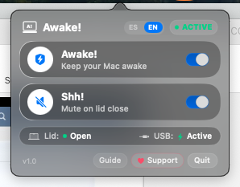
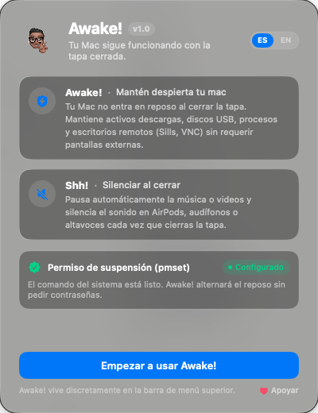
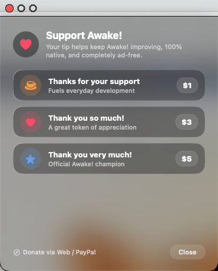
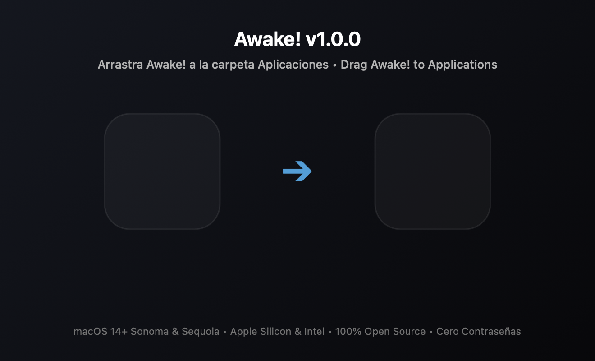

Close the lid.
Your Mac stays awake.
The lightweight native menu bar utility that prevents clamshell sleep without external displays, maintains continuous USB bus power, eliminates remote desktop black screens, and mutes audio the moment you close the screen.
git clone https://github.com/Alex-Louder/Awake.git && cd Awake && ./install.sh

Engineered for creators, developers, and remote workers who refuse to let a closed lid interrupt a single render, server, or download.
What happens when you close your MacBook.
Without an external monitor plugged in, macOS aggressively suspends hardware. Standard caffeinate commands keep CPU active but fail to prevent clamshell sleep.
-
•
Terminates active background jobs: Video renders, ML training, downloads, and Docker containers halt instantly.
-
•
Cuts USB bus power: External NVMe drives forcibly unmount, audio interfaces power off.
-
•
Black screen in Remote Desktop: WindowServer shuts off display framebuffer; Sills, RustDesk, and VNC turn black.
-
•
Embarrassing audio blunders: Music or videos continue blaring loudly if you close the lid hurriedly in quiet spaces.
-
•
Zero Clamshell Sleep: Your MacBook stays fully awake with lid shut, running headless without external dongles.
-
•
Uninterrupted USB Bus Power: External SSDs, audio cards (Focusrite, Apollo), and hubs stay continuously powered.
-
•
Flawless Remote Desktop: Internal screen brightness drops to 0 while GPU framebuffer stays active at 60 FPS.
-
•
Shh! Intelligent Mute: Automatically pauses NowPlaying media and mutes system audio on close; restores on reopen.
Built with precision. Zero compromises.
Written in pure Swift with zero external telemetry, no electron wrapper, and no background daemons running when idle.
Shh! Smart Media & Volume Guardian
Detects lid angle through native IOKit hardware notifications. Instantly triggers MediaRemote pause and silences CoreAudio (internal speakers, AirPods, USB DACs). Your original volume level is seamlessly restored when you open your screen.
Zero Black Screen on Remote Access
Unlike dummy HDMI plugs or hacky kexts, Awake! dims your backlight to 0 while maintaining the WindowServer framebuffer. Connect from anywhere via Sills, VNC, RustDesk, or AnyDesk without display failure.
Zero Password Prompts in Daily Use
One single strictly scoped sudoers rule for pmset. The app itself never runs as root and never pesters you with admin prompts.
%admin ALL=(ALL) NOPASSWD: /usr/bin/pmset -a disablesleep *
~15 MB Memory • 0% Idle CPU
Native macOS menu bar footprint with zero background daemons. Leaves 99.9% of system memory free for your actual work.
How Awake! operates under the hood.
Transparent, auditable Swift code leveraging native macOS kernel APIs without obsolete kernel extensions.
1. IOKit Magnetic Sensor
Subscribes to AppleACPIPlatformExpert and IOPMrootDomain clamshell notifications. Wakes event loops only when the lid physically moves.
IOServiceAddInterestNotification(...)
2. Scoped pmset Assertion
Executes pmset -a disablesleep 1 with a dedicated sudoers entry. Tells macOS power management to bypass clamshell suspension safely.
pmset -a disablesleep 1
3. CoreAudio & Media Hooks
Hooks into MRMediaRemoteSendCommand to pause active audio/video players, mutes audio outputs, and saves volume state to restore on lid open.
AudioObjectSetPropertyData(...)

Engineered for modern workflows.
See how Awake! compares to traditional caffeinate scripts and legacy menu bar utilities.
| Feature | Awake! | Amphetamine | macOS caffeinate |
|---|---|---|---|
| Clamshell sleep prevention without external display | ✓ Native (pmset) | Requires helper | Not supported |
| Maintains USB bus power on lid close | ✓ 100% Protected | Often drops bus power | Suspended |
| Remote Desktop (Sills, VNC) without black screen | ✓ Guaranteed | Frequent black screen | Black screen |
| Smart Mute & Media Pause on close (Shh!) | ✓ Native (CoreAudio) | No | No |
| Password prompts during daily operation | ✓ 0 Prompts (Silent) | Prompts on state changes | Requires sudo |
| Memory footprint | ~15 MB RAM | ~70–120 MB RAM | ~1 MB (CLI only) |
| 100% Open source & zero telemetry | ✓ 100% MIT Open Source | Proprietary | Apple CLI |
Private by design. Open by principle.
Awake! was created with a least privilege security model. No telemetry, no background analytics, and complete user ownership.
- Zero outbound network requests (no telemetry, no trackers).
- Runs in ordinary user space; only pmset is authorized via sudoers.
- 100% clean uninstallation in a single Terminal command.
# Configured by Awake! Onboarding # Only allows pmset disablesleep without password %admin ALL=(ALL) NOPASSWD: /usr/bin/pmset -a disablesleep *
sudo rm -f /etc/sudoers.d/awake && rm -rf /Applications/Awake\!.app

Alex Louder (@Alex-Louder)
Independent software craftsman passionate about clean macOS native tools, performance, and respectful privacy. If Awake! saves your downloads or remote workflows, support further development with a coffee!

Frequently Asked Questions
Clear answers to hardware safety, thermal behavior, and security questions.
Modern Apple Silicon MacBooks (M1 through M4) are remarkably efficient and generate minimal heat at low to moderate loads. However, if you run heavy CPU/GPU tasks (like 4K video rendering or local LLM training) inside an airtight, insulated bag, heat cannot dissipate efficiently. We recommend toggling Awake! off before packing your laptop for travel during heavy renders.
During first run onboarding, Awake! configures a single rule in /etc/sudoers.d/awake granting your user permission to run /usr/bin/pmset -a disablesleep * without password prompts. The app itself never runs as root. You can review or delete this file at any time.
Yes. Shh! monitors system default output devices via macOS CoreAudio and pauses playback across all media players using MediaRemote. Whether you use internal speakers, AirPods Max, or a professional USB DAC, audio is silenced immediately upon lid close.
Awake! itself consumes approximately 15 MB of RAM and 0.0% idle CPU because it relies on kernel event notifications rather than polling loops. Battery consumption is entirely determined by the background tasks you choose to run (e.g. servers or downloads).
Awake! is officially tested and supported on macOS 14 Sonoma, macOS 15 Sequoia, and upcoming releases, across all Apple Silicon (M1, M2, M3, M4) and Intel architectures.
Run two simple commands in Terminal: sudo rm -f /etc/sudoers.d/awake and rm -rf /Applications/Awake\!.app. Zero hidden files, zero orphaned system launch daemons.
Keep your Mac awake on your terms.
Download the universal macOS DMG or compile from source. 100% free and open source.
